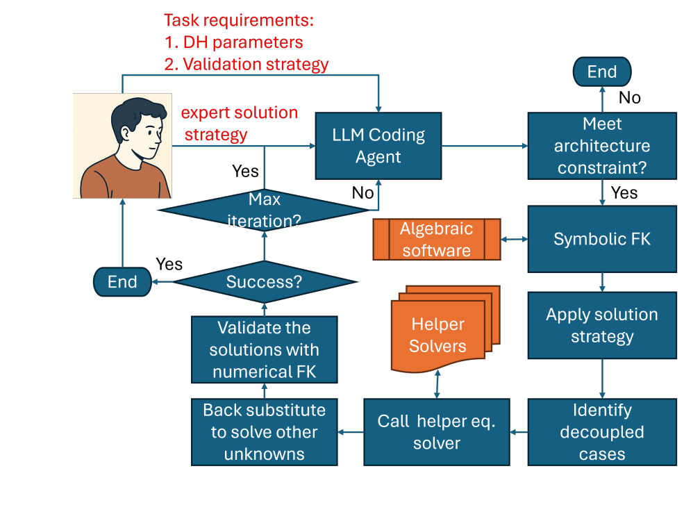

Large Language Model Assisted Human-AI Collaborative Development of Analytical Inverse Kinematics Solvers for Robot Manipulators

Welcome to the Intelligent Design and Robotics Lab (IDR Lab). We develop intelligent computational methods for engineering design, spanning generative design, CAD, CAE, mechanism synthesis and analysis, robotics, mixed reality simulation, embodied artificial intelligence, and theoretical kinematics.
Our research combines AI-based and data-driven mechanism and robot design with autonomous robotic manipulation, simulation and teleoperation in augmented and virtual environments, and the design, manufacturing, and control of soft and compliant robotic systems for industrial, service, medical, and agricultural applications.
Our goal is to connect high-level design intent with physically grounded engineering systems through algorithms, models, tools, and interactive environments that support design automation and robot innovation. Learn more about our active directions on the Research page and browse papers, project outputs, and related materials on the Publications page. Videos and lab demos are also collected on our YouTube channel.
IDR Lab brings together mechanism science, compliant systems, robotics, immersive engineering simulation, and learning-enabled design workflows. We are particularly interested in methods that bridge theory and practice: from computational kinematics and synthesis algorithms to deployable tools for intelligent CAD/CAE and robotic design.